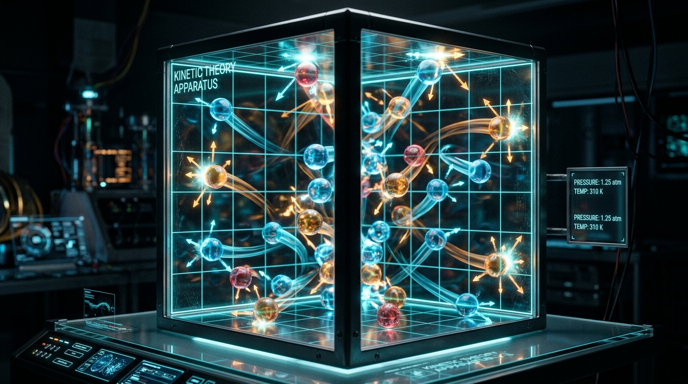
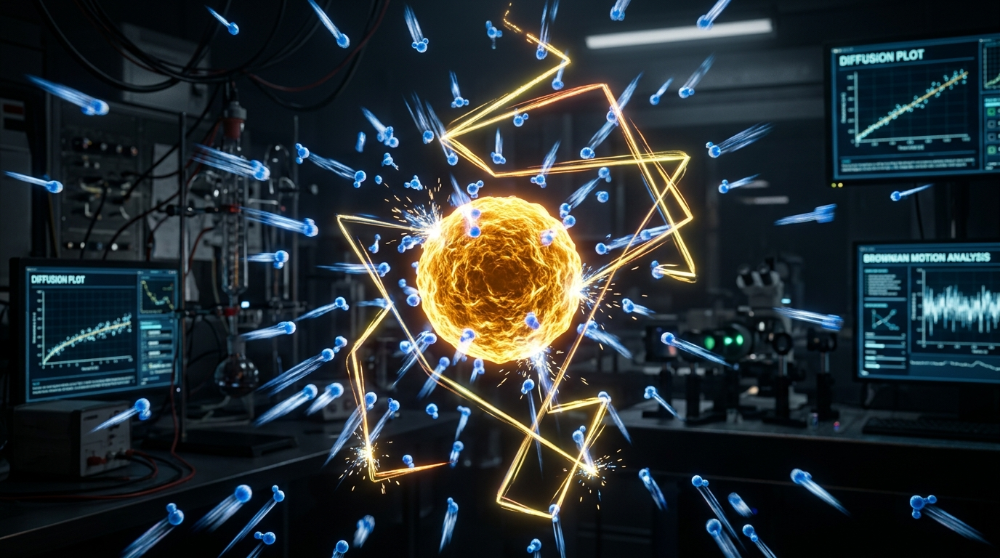
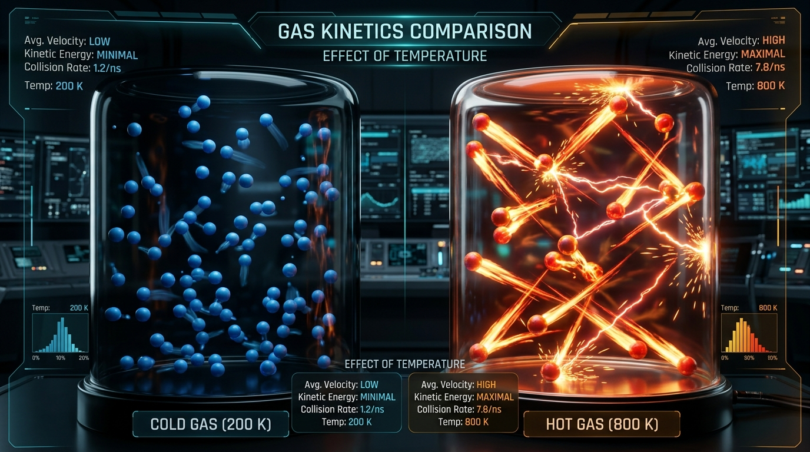

BÀI 8: MÔ HÌNH ĐỘNG HỌC PHÂN TỬ CHẤT KHÍ (VẬT LÍ 12 - GDPT 2018)
I. CẤU TRÚC CỦA CHẤT KHÍ
So với chất rắn và chất lỏng, chất khí có cấu tạo vi mô rất đặc biệt với các tính chất đặc trưng:
- Khoảng cách giữa các phân tử: Khoảng cách trung bình giữa các phân tử khí rất lớn so với kích thước của chính chúng. Thể tích của bản thân các phân tử khí là không đáng kể so với thể tích bình chứa.
- Lực tương tác phân tử: Lực hút và lực đẩy giữa các phân tử khí rất yếu khi không va chạm. Do đó, các phân tử khí chuyển động tự do về mọi phía.
- Chuyển động nhiệt hỗn loạn: Các phân tử khí chuyển động hỗn loạn không ngừng. Nhiệt độ của chất khí càng cao thì tốc độ chuyển động trung bình của các phân tử càng lớn.

II. CHUYỂN ĐỘNG BROWN TRONG CHẤT KHÍ
Năm 1827, Robert Brown phát hiện ra các hạt phấn hoa trong nước chuyển động zích zắc không ngừng. Khi quan sát các hạt khói bụi lơ lửng trong không khí qua kính hiển vi, ta cũng thấy chúng chuyển động zích zắc hỗn loạn tương tự gọi là chuyển động Brown.
Các phân tử khí vô cùng nhỏ bé và chuyển động hỗn loạn với tốc độ rất lớn. Chúng va chạm liên tục từ mọi phía vào hạt khói bụi. Vì số lượng phân tử va đập ở các hướng tại mỗi thời điểm là không bằng nhau (bất đẳng hướng), làm cho hạt khói bị đẩy lệch theo các hướng ngẫu nhiên, tạo nên đường đi zích zắc.

III. THUYẾT ĐỘNG HỌC PHÂN TỬ CHẤT KHÍ
Thuyết động học phân tử chất khí bao gồm 3 nội dung cốt lõi:
- Chất khí gồm vô số các phân tử có kích thước rất nhỏ so với khoảng cách giữa chúng.
- Các phân tử khí chuyển động hỗn loạn không ngừng. Nhiệt độ càng cao thì tốc độ chuyển động trung bình phân tử càng lớn.
- Khi va chạm vào thành bình, các phân tử khí truyền động lượng cho thành bình, tạo nên áp suất chất khí lên thành bình.

IV. MÔ HÌNH KHÍ LÍ TƯỞNG (IDEAL GAS)
Để thuận tiện trong nghiên cứu định lượng các định luật chất khí, các nhà vật lý đưa ra mô hình Khí lí tưởng:
| Tiêu chí so sánh | Khí thực Real Gas | Khí lí tưởng Ideal Gas |
|---|---|---|
| Kích thước phân tử | Có kích thước xác định. | Được coi là các chất điểm (kích thước bỏ qua). |
| Lực tương tác phân tử | Có lực hút và lực đẩy ở khoảng cách gần. | Bỏ qua lực tương tác khi chưa va chạm. |
| Tính chất va chạm | Va chạm có thể tiêu hao năng lượng. | Là các va chạm hoàn toàn đàn hồi (bảo toàn động năng). |
| Điều kiện áp dụng | Ở điều kiện nhiệt độ và áp suất thường. | Ở nhiệt độ cao và áp suất thấp, khí thực xấp xỉ khí lí tưởng. |